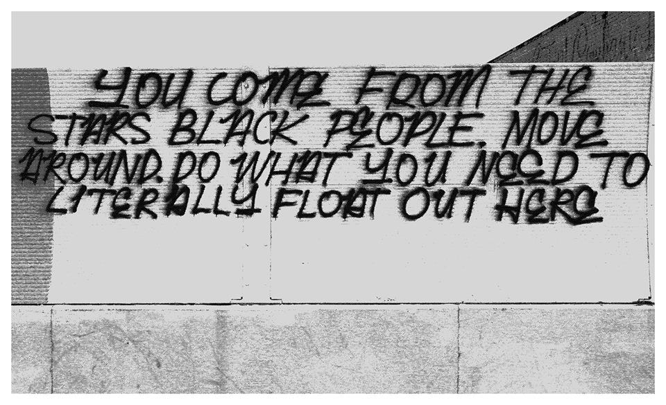

click to close
CALLING ALL IMAGINATIONS:
Last summer in Baltimore, just a few months following the Baltimore Uprising, I started reaching out to possible collaborators for a project that has now become If I Ruled The World. At that time, it felt like the most important thing I could do was to be present with other people who cohabitate the city, to be as aware as possible of the people around me and the vastly different experiences of this city that we all have. I’m not sure that I was able to discreetly identify this at the time; I didn’t know exactly why I was starting this project, but somehow this collection of works and conversations came out of an attempt to be fully present. Starting at that moment, and over the past couple months in Baltimore, for me, to be fully present has meant having conversations, or listening in on conversations, that investigate where freedom and joy exists in Baltimore and where freedom and joy could, but does not yet, exist in Baltimore.
The prompt for this project, taken from Nas’ song “If I Ruled The World” (It Was Written, 1996) featuring Lauryn Hill, is a contradiction itself; on one hand, it asserts that everyone has the right to take up space and envision the world as they want it, but on the other, it claims an old-school, hierarchical way of structuring life. However outdated this question might be, it provoked a series of collaborative, artistic responses and conversations by Baltimore-based creatives and activists, who attempted to find a contemporary way of asking the question itself. Artistic collaborators who stepped into this project did not only contribute content but also defined the direction of the entire project and identified new collaborators to pull in. Thus, this collection of unique voices, works and conversations grew organically over the past few months.
When starting this project, my hope was that the prompt would inspire collaborators to imagine their most positive visions of the world, and through that positivity, would be able to thoughtfully and critically investigate the nuances within the struggle for social equity in our city. However, this collection of works evolved to approach art and activism much more broadly, touching on subjects such as health, education, language, public space and more. These themes that emerged in reaction to the on-going threads I set up, questions such as, What makes you feel free? What is special to you about Baltimore? What do you say 100% yes to? ground this investigation in the idea that activism can take many different forms, and is, at it’s root, something that is strongly tied to the ways we live our lives every single day. Instead of being a call for imagination, this project evolved to investigate and exemplify the concrete actions that can grow out of the audacity and the courage that it takes to imagine the world as you want it to be.
This is a call for more than imagination. What if you ruled the world?
Kimi Hanauer
Press Press
IF I RULED THE WORLD
The IF I RULED THE WORLD CONFERENCE will take place at Open Space’s 7th annual Publications and Multiples Fair at the Baltimore Design School (1500 Barclay) in Baltimore, Maryland. The fair goes from 12-6PM on Saturday, April 9th and Sunday, April 10th.
SEE YOU THERE ;)
Conference Schedule
Saturday, April 9th, 4:00-6:00pm
4:00 - 4:30 - Dance party DJ'ed by Greydolf & Introduction by Kimi Hanauer
4:30 - 4:50 - Poertry Reading and Human Rights Manifesto Declaration by Baltimore City Community College Refugee Youth Project students: Mang Thang, Cing Kim, Nuam Lun and others
5:00 - 6:00 - If I Ruled the World Contributors panel featuring: Person Albach, Khadija Nia Adell, Jared Brown, Besan Khamis, Rahul Shinde, Greydolf and Amy Reid
Sunday, April 10th, 2:00-4:00pm
2:00 - 2:30 - Get Your Life Productions! Film Screening and Q & A with the artists
2:30 - 2:45 - Dance Pary DJ'ed by Amy Reid & Greydolf
3:00 - 4:00 - Bryanna Jankins Keynote
For more info check our Facebook Event or the Press Press website

If I Ruled The World, presented by Press Press with support from BmoreArt, is a publication that takes inspiration from the Nas classic, "If I Ruled The World" (It Was Written, 1996), in order to facilitate artistic collaborations and conversations between a range of Baltimore-based Creatives and activists. In their responses, contributors present their most positive visions of the world, and by doing so are able to thoughtfully analyze and investigate the nuances within the struggle for equiy in our city and the active role of artist within the pursuit for social change.